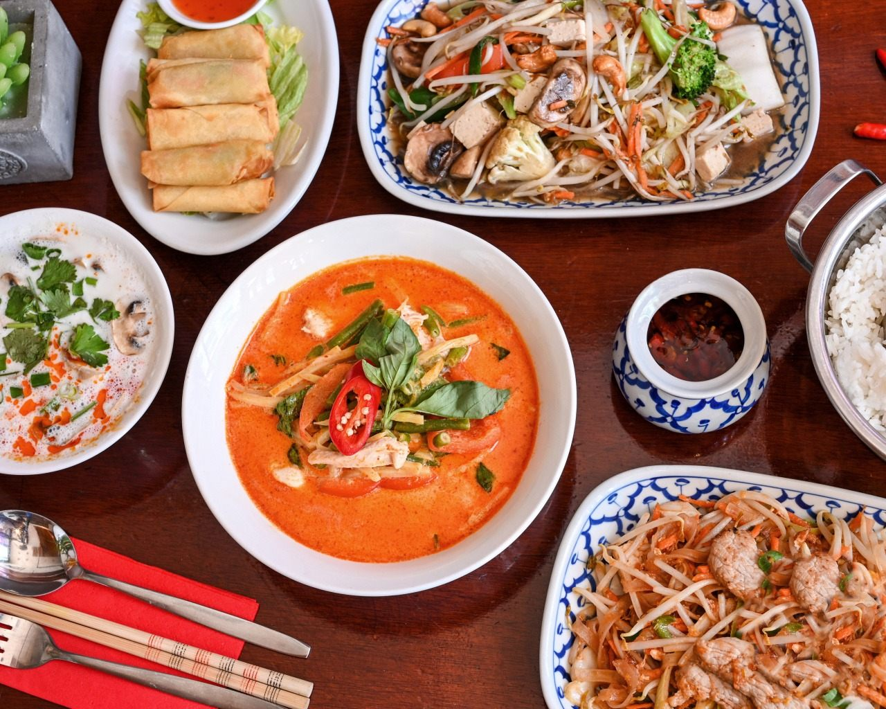
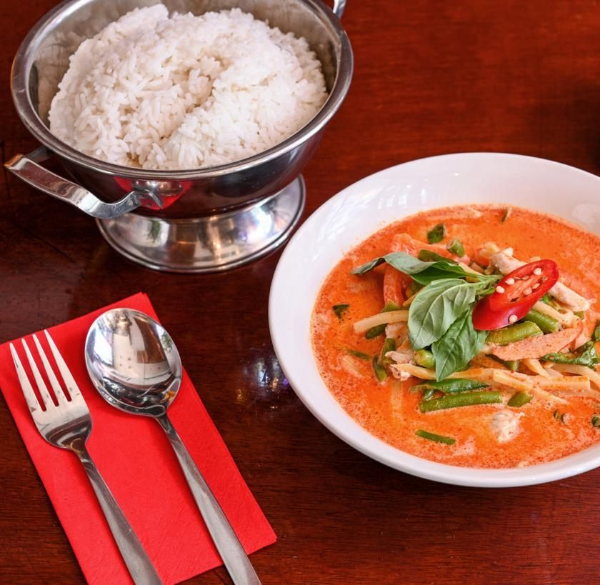
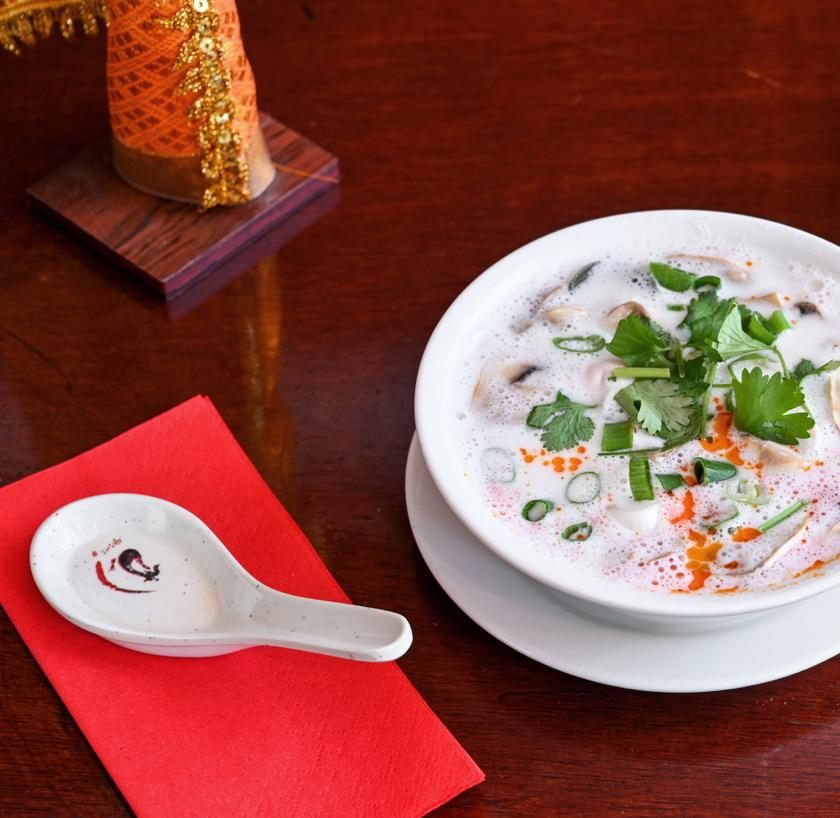

Thais eethuis in hartje Amsterdam
Baibua
Thaise klassiekers en gerechten die je hier minder vaak ziet, gekookt in ons kleine familierestaurant aan de Geelvincksteeg.
Di t/m za 12:00 tot 22:00, zo 13:00 tot 22:00, maandag gesloten
Een klein familierestaurant, sinds 2018
Baibua werd in 2018 opgericht door twee partners die allebei veel ervaring hebben in de Thaise keuken. Op de kaart staan Thaise klassiekers en gerechten die minder bekend zijn. Hoe dan ook: gegarandeerd lekker.
De sfeer is knus en gastvrij, perfect voor een romantisch etentje of een ontspannen avond met vrienden en familie. Kom langs en proef onze passie voor eten en gastvrijheid.
Een tafel reserveren

Menukaart
De nummers zijn handig als je telefonisch bestelt. Pepertjes geven aan hoe pittig een gerecht is: een beetje, pittig.
Om mee te beginnen, of om samen te delen.
-
1
€ 7,25
Loempia's
Knapperig gefrituurde vegan loempia's. 8 stuks.
-
2
€ 7,25
Zoete Thaise spareribs
Zoet gemarineerde Thaise spareribs. 5 stuks.
-
3
€ 7,25
Thai pangsit
Gefrituurde dumplings met een vulling van kip, garnaal en krab. 4 stuks.
-
4
€ 8,75
Viskoekjes
Gefrituurde viskoekjes op smaak gebracht met rode curry. 4 stuks.
-
5
€ 8,75
Kipsaté
Gemarineerde kipspiesjes met pindasaus. 4 stuks.
-
6
€ 7,25
Vistofu
Gefrituurde, malse blokjes vistofu. 5 stuks.
-
7
€ 7,25
Kaasstengels
Gefrituurde kaas in een wontonvelletje. 5 stuks.
-
8
€ 9,95
Gemengde voorgerechten
2 loempia's, 1 pangsit, 1 vistofu, 1 viskoekje en 1 kipsaté.
Geurig van citroengras, galanga en limoenblad.
-
9
Tom yum een beetje pittig
Pittige, hartige en zure soep met citroengras, galanga en limoenblad.
- Kip€ 8,50
- Vis€ 9,00
- Garnalen€ 9,00
- Zeevruchten€ 9,50
-
10
Tom ka
Romige soep op basis van kokosmelk, met citroengras, galanga, limoenblad en een vleugje chili-olie.
- Vegetarisch€ 8,50
- Kip€ 9,00
- Garnalen€ 9,50
Kies je vlees, vis of vegetarisch; de prijs staat erbij. Geserveerd met rijst, tenzij het zelf rijst of noedels is.
-
11
Pad nam man hoi
Roerbak met oestersaus en groenten. Met rijst.
- Kip€ 21,50
- Rund€ 22,50
- Garnalen€ 24,50
-
12
Pad preaw waan
Zoetzure roerbak met ananas en groenten. Met rijst.
- Kip€ 21,50
- Varken€ 21,50
- Vis€ 22,00
- Inktvis€ 22,00
- Rund€ 22,50
- Eend€ 24,00
- Garnalen€ 24,50
-
13
Kaeng daeng pittig
Rode curry met kokosmelk. De pit komt van gedroogde rode pepers in de currypasta. Met rijst.
- Vegetarisch€ 20,50
- Kip€ 21,50
- Varken€ 21,50
- Vis€ 22,00
- Inktvis€ 22,00
- Rund€ 22,50
- Eend€ 24,00
- Garnalen€ 24,50
-
14
Kaeng kheaw waan pittig
Groene curry met kokosmelk. Kruidig, met flink wat pit van de groene pepers in de currypasta. Met rijst.
- Vegetarisch€ 20,50
- Kip€ 21,50
- Varken€ 21,50
- Vis€ 22,00
- Inktvis€ 22,00
- Rund€ 22,50
- Eend€ 24,00
- Garnalen€ 24,50
-
15
Kaeng panaeng een beetje pittig
Panaeng curry: een mildere variant van de rode curry, met een dikke, romige kokossaus. Met rijst.
- Vegetarisch€ 20,50
- Kip€ 21,50
- Varken€ 21,50
- Vis€ 22,00
- Inktvis€ 22,00
- Rund€ 22,50
- Eend€ 24,00
- Garnalen€ 24,50
-
16
Pad med mamuang
Roerbak met cashewnoten en groenten. Met rijst.
- Kip€ 22,00
- Rund€ 23,00
- Garnalen€ 24,50
-
17
Kratiam prik thai
Roerbak met knoflook, witte peper en koriander. Met rijst.
- Kip€ 22,50
- Varken€ 22,50
- Rund€ 23,00
- Inktvis€ 23,00
- Vis€ 23,00
- Garnalen€ 24,50
-
18
Pad krapao pittig
Pittige roerbak met basilicum. Vind je overal in Thailand, en een aanrader voor wie van pittig houdt. Met rijst.
- Vegetarisch€ 20,50
- Kip€ 22,00
- Varken€ 22,00
- Rund€ 22,50
- Inktvis€ 22,50
- Eend€ 24,00
- Garnalen€ 24,50
- Zeevruchten€ 25,50
-
19
Khao pad
Thaise gebakken rijst: geurige jasmijnrijst met knoflook, witte peper en groenten.
- Vegetarisch€ 20,50
- Kip€ 21,00
- Varken€ 21,00
- Rund€ 22,00
- Inktvis€ 22,00
- Eend€ 24,00
- Garnalen€ 24,50
-
20
Pad mee
Gebakken gele noedels met groenten en kruiden.
- Vegetarisch€ 20,50
- Kip€ 21,00
- Varken€ 21,00
- Rund€ 22,00
- Inktvis€ 22,00
- Eend€ 24,00
- Garnalen€ 24,50
-
21
Pad pak ruam mitr
Thaise groenteroerbak. In Thailand vaak een bijgerecht om samen te delen, maar ook lekker op zich. Met rijst.
- Vegetarisch€ 20,50
- Kip€ 21,00
- Varken€ 21,00
- Rund€ 22,00
- Inktvis€ 22,00
- Eend€ 24,00
- Garnalen€ 24,50
Straatklassiekers, noedelsoepen en salades uit de Isaan, het noordoosten van Thailand.
-
22
Pad thai
Zoet-hartige gewokte noedels, een van de bekendste Thaise straatgerechten. Met pinda en limoen.
- Vegetarisch€ 20,50
- Kip€ 22,00
- Varken€ 22,00
- Rund€ 22,50
- Inktvis€ 22,50
- Eend€ 23,50
- Garnalen€ 24,50
- Zeevruchten€ 25,50
-
23
Pad kee mao pittig
'Drunken noodles': pittige gewokte rijstnoedels met pepers en basilicum.
- Vegetarisch€ 20,50
- Kip€ 22,00
- Varken€ 22,00
- Rund€ 22,50
- Inktvis€ 22,50
- Eend€ 23,50
- Garnalen€ 24,50
- Zeevruchten€ 25,50
-
24
€ 25,50
Baibua mixed rice and noodles
Gebakken rijst en gele noedels met ei, kip, varkensvlees, rund, inktvis en garnaal.
-
25
€ 25,50
Curry mix
Kies je curry: rood (pittig), groen (pittig) of panaeng (mild pittig), met kip, varkensvlees, rund, inktvis en garnaal.
-
26
€ 26,00
Seafood curry mix
Kies je curry: rood (pittig), groen (pittig) of panaeng (mild pittig), met vis, inktvis en garnaal.
-
27
€ 20,00
Som tam pittig
Pittige 'salade' van geraspte papaya met chili, limoen, vissaus, suiker en cashewnoten. Durf je 'Thai spicy' aan?
-
28
Kaeng massaman
Bijzondere curry uit het zuiden van Thailand. Mild, met een mengsel van specerijen in de currypasta, aardappel en langzaam gegaard vlees naar keuze. Met cashewnoten.
- Kip€ 22,00
- Rund€ 23,00
-
29
Yentafo
Zoet-hartige roze noedelsoep; de kleur komt van gefermenteerde tahoe. Een aanrader!
- Kip€ 21,00
- Varken€ 21,00
- Zeevruchten€ 25,00
-
30
Kuay teaw
Traditionele Thaise noedelsoep met rijstnoedels en morning glory. Kies rund voor een donkerdere 'boat noodle'-soep.
- Vegetarisch€ 20,50
- Kip€ 21,00
- Varken€ 21,00
- Rund€ 22,00
- Zeevruchten€ 25,00
-
31
€ 22,00
Nua nam tok pittig
Pittige rundvleessalade met kruiden, uit de Isaan.
-
32
€ 22,00
Nua yang
Isaan-gerecht met rundvlees in een zoete, friszure saus.
-
33
€ 22,00
Yam nua een beetje pittig
Pittige rundvleessalade uit de Isaan met rode ui, tomaat, komkommer en kruiden.
-
34
Larb pittig
Pittige Isaan-salade met kruiden, rode ui en gehakt.
- Kip€ 21,00
- Varken€ 21,00
- Rund€ 22,00
-
35
€ 21,00
Yam kai yang een beetje pittig
Pittige salade met gebakken kip, rode ui, tomaat, komkommer en kruiden.
-
36
Pad see ew
Hartige, licht rokerige gewokte noedels met sojasaus. Net als drunken noodles, maar zonder pit.
- Vegetarisch€ 20,50
- Kip€ 22,00
- Varken€ 22,00
- Rund€ 22,50
- Inktvis€ 22,50
- Eend€ 23,50
- Garnalen€ 24,50
- Zeevruchten€ 25,50
Iets extra's bij je gerecht.
- Kip€ 4,00
- Varkensvlees€ 4,50
- Rund€ 5,00
- Inktvis€ 5,00
- Vis€ 5,50
- Eend€ 7,50
- Garnalen€ 8,00
- Zeevruchten€ 8,50
- Groenten€ 3,50
- Gebakken rijst€ 6,00
- Gebakken noedels€ 6,00
- Bord rijst€ 4,50
- Pot rijst€ 6,50
- Ei€ 3,50
- Cashewnoten€ 3,50
- Pindasaus€ 3,50
Om zoet af te sluiten.
- € 7,50
Gefrituurd ijs
IJs door paneermeel en ei gehaald en daarna gefrituurd. Met slagroom.
- € 6,50
Kleefrijst met taro
Blokje zoete kleefrijst gevuld met taro, gestoomd in bananenblad. Met slagroom.
- € 7,50
Citroenijs
Citroenijs geserveerd in een citroen.
- € 7,50
Sinaasappelijs
Sinaasappelijs geserveerd in een sinaasappel.
- € 7,50
Kokosijs
Kokosijs geserveerd in een kokosnoot.
- € 10,95
Mango sticky rice
Traditioneel Thais dessert van zoete kleefrijst met mango, zoute kokosmelk en geroosterde mungbonen.
Sommige gerechten bevatten noten, gluten of andere allergenen. Lees meer over allergenen.
Dagelijkse afhaalspecial
€ 19,00 vegetarisch of met kip
- DinsdagPanaeng curry
- WoensdagGebakken rijst
- DonderdagPad thai
- VrijdagPad krapao
- ZaterdagRode curry
- ZondagGroene curry
Bestellen voor afhalen: bel (020) 528 92 28.
Liever thuisbezorgd?
Je kunt ons eten ook laten bezorgen via onze bezorgpartners. Heb je een allergie of intolerantie? Zet het dan in het opmerkingenveld bij je bestelling.
Allergenen en pittigheid
Gluten en zuivel
De traditionele Thaise keuken gebruikt geen zuivel, dus al onze gerechten zijn zuivelvrij. Sommige gerechten bevatten gluten, maar het ingrediënt met gluten kunnen we vervangen door iets anders. Laat het ons weten, dan helpen we je graag. Kruisbesmetting kunnen we helaas niet voorkomen.
We doen ons best, maar we kunnen niet garanderen dat een gerecht 100% vrij is van allergenen: we werken dagelijks met allerlei allergenen. Heb je een allergie of intolerantie? Meld het bij binnenkomst, dan helpen we je zo goed als we kunnen. Bestel je online, zet het dan in het opmerkingenveld.
Pittigheid
De Thaise keuken staat bekend om haar rijke mix van smaken, en pittig is daar één van. We willen iedereen een fijne avond bezorgen, maar we kunnen een gerecht niet helemaal ontdoen van zijn pit zonder het gerecht te veranderen.
Laat ons gerust weten hoe pittig je het wilt, dan helpen we je het gerecht te kiezen dat het best bij je past.
Reserveren
Reserveren gaat telefonisch. Vooraf reserveren betekent minder wachten; met 5 personen of meer raden we het zeker aan.
(020) 528 92 28Vrijdag en zaterdag
Ons restaurant is klein, daarom kunnen we op vrijdag en zaterdag maar een beperkt aantal reserveringen aannemen. Bel ons, we helpen je graag.
Anderhalf uur in het weekend
In het weekend is het meestal erg druk. Daarom gelden alle reserveringen dan voor 1,5 uur.
Later dan gepland?
Laat het ons even weten. Anders geven we je tafel na 15 minuten aan iemand anders.
Reisgroepen
Voor reserveringen en tarieven voor reisgroepen: mail naar info@baibuathaiseethuis.nl.
Openingstijden en adres
| Maandag | Gesloten |
|---|---|
| Dinsdag t/m zaterdag | 12:00 tot 22:00 |
| Zondag | 13:00 tot 22:00 |
De keuken sluit 30 minuten voor sluitingstijd. Openingstijden onder voorbehoud.
Baibua Thais EethuisGeelvincksteeg 6H
1017 BE Amsterdam